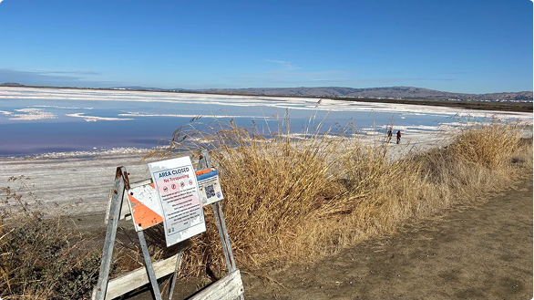

Salt Pond A12, located near Alviso Marina County Park in Santa Clara County, features a remarkable pink color. This distinctive hue comes from microorganisms such as Dunaliella salina and Halobacterium that flourish in the pond's highly saline conditions. When water levels decrease through evaporation or management techniques, the resulting increased salt concentration promotes greater microbial growth, enhancing the vibrant pink coloration.
The A12 pond was once used for salt production, where seawater evaporated in a series of ponds, leaving behind salt crystals for harvesting. Though no longer active, its high salinity still supports pink algae and bacteria. The vibrant color comes from microorganisms that thrive in extreme salt conditions. Part of a network of former salt ponds, A12 is now included in the South Bay Salt Pond Restoration Project, which seeks to restore habitats while preserving the area's salt-making history.
Pond A12 is part of the Don Edwards San Francisco Bay National Wildlife Refuge, an important protected area that supports various migratory and resident bird species, including the threatened western snowy plover. The pond’s ecosystem is highly sensitive, and visitors are advised to stay on designated trails, avoid approaching the pond’s edge, and refrain from using drones to prevent disturbing the wildlife.